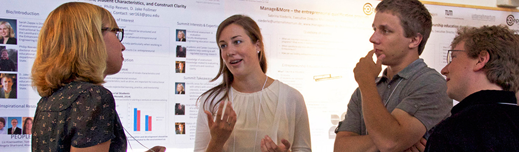
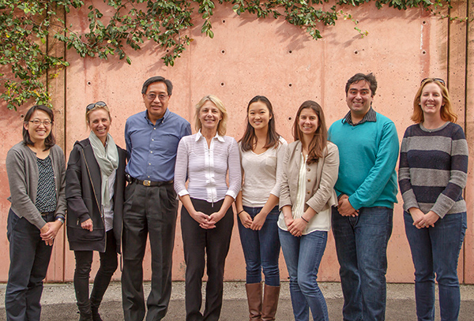

|
Post-NSF funding, this research is being continued by the Designing Education Lab in Stanford University's School of Engineering. Learn more at web.stanford.edu/group/design_education/cgi-bin/mediawiki/index.php/Main_Page. AboutDuring the NSF grant, the Epicenter research team conducted a set of large, multi-method, national studies of entrepreneurship in engineering collectively known as the Fostering Innovative Generations Studies, or FIGS. As part of FIGS, the team pursued three major Research Questions (RQs). Each of these questions addressed an important gap in existing knowledge about entrepreneurship education for engineers:
 The FIGS team: (from left) Helen Chen, Shannon Gilmartin, George Toye, Sheri Sheppard, Emily Cao, Angela Harris, Emanuel Costache, Laurie Moore. Not pictured: Anna Breed, Carolyn Estrada, Michelle Grau, Qu Jin, Calvin Ling, Mark Schar, and Autumn Turpin; VentureWell collaborators Angela Shartrand and Ari Turrentine; and Senior Research Advisors Mary Besterfield-Sacre, Samantha Brunhaver, and Nathalie Duval-Couetil.
Here is a summary of our three core questions: RESEARCH QUESTION 1 - PROGRAM MODELSWhat are current models of educating engineers for entrepreneurship/entrepreneurial thinking?In this research, the unit of analysis is the entrepreneurship program, and the focus is on programmatic contexts for entrepreneurship learning. This mixed-methods research builds on the work of Standish-Kuon and Rice (2002), Shartrand et al. (2010), Besterfield-Sacre et al. (2011), and Duval-Couetil, Shartrand, and Reed (forthcoming). See here for a link to our recent presentation on RQ1 at the OPEN 2014 conference in San Jose, CA. RESEARCH QUESTION 2 - STUDENTS' INTERESTS AND GOALS
What are undergraduate engineering students’ innovation and entrepreneurial interests, abilities, and achievements? How do these interests, abilities, and achievements change over time? Which educational and workplace environments/experiences influence the development of their innovation and entrepreneurial interests, abilities, and achievements?
Learn more about the Engineering Majors Survey » RESEARCH QUESTION 3 - CURRICULUM DEVELOPMENTHow can fundamental engineering curricula be reframed to stimulate integrative thinking, especially entrepreneurial thinking?In this research, the unit of analysis is the technical engineering classroom (inclusive of faculty, students, and curricula), and the focus is on the process of entrepreneurship learning in the context of a statics course. This work draws from Kolb’s learning theory and studies of scenario-based learning experiences. This research has resulted in an award-winning conference paper (see Schar et al.). Initially tested at Stanford, the Scenario Based Learning techniques in this research are currently being rolled out and tested at University of Wisconsin (Madison) and UC-Merced. RESEARCH COMMUNITYAnother top goal of the Epicenter Research Team is to build and strengthen a community of entrepreneurship researchers, particularly in and around engineering. We have framed this as our fourth FIGS study; here, our research question is "What are the most effective strategies for fostering connections and community in the engineering entrepreneurship space?"As part of our work, we have designed and hosted several events to bring together entrepreneurship researchers from a variety of backgrounds. We held three sessions at OPEN 2012, OPEN 2013, and OPEN 2014, respectively, to introduce attendees to the latest research and evaluation in the field. In May 2012, we hosted an Epicenter Research Workshop at Stanford, where we brought together 27 scholars, leaders, and students in the fields of engineering and entrepreneurship education for an intensive, day-long workshop. In August 2014, we hosted the first Epicenter Research Summit, again at Stanford. The Summit included 70 researchers and practitioners from the U.S. and Europe.
Epicenter Research SummitThe first Epicenter Research Summit was held at Stanford University, August 4-5, 2014. View presentations, session summaries, posters, photos and more » Publications2015 Lintl, Florian M., Jin, Qu, Gilmartin, Shannon, Chen, Helen L., Schar, Mark, Sheppard, Sheri. "Starter or Joiner, Market or Socially-Oriented: Predicting Career Choice Among Undergraduate Engineering and Business Students." Read more and download the PDF * Award: 2nd place, best research paper, ASEE Entrepreneurship and Engineering Innovation Division (ENT) 2015 Nilsen, Elizabeth, Matthew, Victoria, Shartrand, Angela, & Monroe-White, Thema. "Stimulating and Supporting Change in Entrepreneurship Education: Lessons from Institutions on the Front Lines." 2015 ASEE Annual Conference, June 2015. Read more and download the PDF Matthew, Victoria, Monroe-White, Thema, Turrentine, Ari, Shartrand, Angela, & Shashikant, Amit. "Integrating Entrepreneurship into Capstone Design: An Exploration of Faculty Perceptions and Practices." 2015 ASEE Annual Conference, June 2015. Read more and download the PDF Rodriguez, Janna, Chen, Helen L., Sheppard, Sheri, Leifer, Larry & Jin, Qu. "Exploring the Interest and Intention of Entrepreneurship in Engineering Alumni." 2015 ASEE Annual Conference, June 2015. Read more and download the PDF * Award: honorable mention, best research paper, ASEE Entrepreneurship and Engineering Innovation Division (ENT) 2015 Sheppard, Sheri, Gilmartin, Shannon, Chen, Helen L., Besterfield-Sacre, Mary E., Duval-Couetil, Nathalie, Shartrand, Angela, Moore, Laurie, Costache, Emanuel, Mihaela, Andreea, Jin, Qu, Ling, Calvin, Lintl, Florian Michael, Britos Cavagnaro, Leticia C., Fasihuddin, Humera, & Breed, Anna K. "Exploring What We Don't Know About Entrepreneurship Education for Engineers." 2015 ASEE Annual Conference, June 2015. Read more and download the PDF
2014 Giersch, Sarah, & McMartin, Flora. "Promising Models and Practices to Support Change in Entrepreneurship Education." Epicenter Technical Brief 2. Stanford, CA and Hadley, MA: National Center for Engineering Pathways to Innovation. March 2014. Read more and download the PDF Giersch, Sarah, McMartin, Flora, Nilsen, Elizabeth, Sheppard, Sheri, & Weilerstein, Phil. "Supporting Change in Entrepreneurship Education: Creating a Faculty Development Program Grounded in Results from a Literature Review." 2014 ASEE Annual Conference, June 2014. Read more and download the PDF * Award: 1st place, best research paper, ASEE Entrepreneurship and Engineering Innovation Division (ENT) 2014 Jin, Qu, Gilmartin, Shannon, Sheppard, Sheri, & Chen, Helen. "Comparing Engineering and Business Undergraduate Students’ Entrepreneurial Interests and Characteristics." 2014 ASEE Annual Conference, June 2014. Read more and download the PDF * Award: 2nd place, best research paper, ASEE Entrepreneurship and Engineering Innovation Division (ENT) 2014 Rodriguez, Janna, Chen, Helen, Sheppard, Sheri, Jin, Qu, & Brunhaver, Samantha. "Exploring Entrepreneurial Characteristics and Experiences of Engineering Alumni." 2014 ASEE Annual Conference, June 2014. Read more and download the PDF Schar, Mark, Billington, Sarah, & Sheppard, Sheri. "Predicting Entrepreneurial Intent among Entry-Level Engineering Students." 2014 ASEE Annual Conference, June 2014. Read more and download the PDF
Schar, Mark, et al. "Bending Moments to Business Models: Integrating an Entrepreneurship Case Study as Part of Core Mechanical Engineering Curriculum." 2013 ASEE Annual Conference, June 2013. Read the paper at asee.org Get InvolvedContact Sheri Sheppard to find out how to collaborate with our research community. |
Team
Sheri Sheppard
Helen Chen
Mark Schar Senior Research Advisors
Mary Besterfield-Sacre
Sarah Zappe Resources
OPEN 2014 Presentation
OPEN 2012 Presentation |
14361 page views